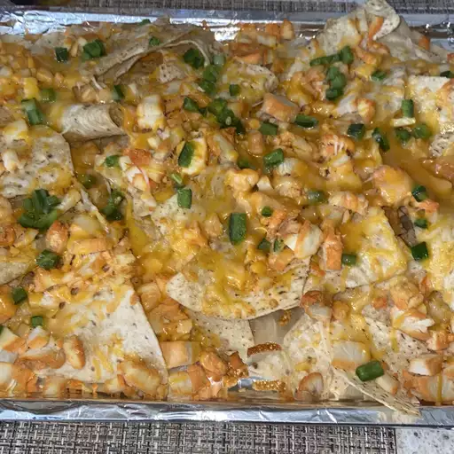

< Home
Chicken Nachos

Philly_mil, "Chicken Nacho Recipe", 2020, via
Allrecipes.com
Super simple and delicious spicy chicken nachos. Totally killer and mouth-watering with bold flavors of guacamole, sour cream and salsa.
- 2 skinless, boneless chicken breasts, chopped
- 2 tablespoons vegetable oil
- 1 teaspoon cayenne pepper, or to taste
- 1 (12 ounce) package corn tortilla chips, or as needed
- 1 (7 ounce) can diced green chiles, drained
- 1 (8 ounce) package shredded Mexican-style cheese blend
- Step 1: Combine chicken, vegetable oil, and cayenne pepper in a bowl; let stand at least 15 minutes, or longer if desired.
- Step 2: Preheat the oven to 325 degrees F (165 degrees C).
- Step 3: Heat a skillet over medium-high heat. Add chicken mixture; cook until no longer pink. Remove from heat; set aside.
- Step 4: Meanwhile, spread a thin layer of tortilla chips in a 9x13-inch baking dish; top with 1/4 chicken, 1/4 chiles, and 1/4 cheese. Repeat layers three more times ending with cheese.
- Step 5: Bake in the preheated oven until cheese melts and nachos heated through, 15 to 20 minutes. Serve with your favorite nacho toppings.